본 포스트는 서울대학교 Chenglin Fan 교수님의 4190.407 Algorithms (Design and Analysis of Algorithms) 강의 자료(15강 Minimum Spanning Trees, 총 123장)를 바탕으로, 강의를 처음 듣는 독자도 논리적 흐름을 따라갈 수 있도록 재구성한 것입니다. 1강 표지에 “Part of Slides Borrowed From Mary Wootters”라고 밝혀 두었듯 이 시리즈의 슬라이드는 상당 부분 Stanford의 Mary Wootters 교수님 자료에서 가져온 것입니다. 본문의 대섹션 구분은 3번째 슬라이드의 Today가 세운 네 갈래 — 1. What is a Minimum Spanning Tree? → 2. Short break to introduce some graph theory tools → 3. Prim’s algorithm → 4. Kruskal’s algorithm — 를 따르고, 119–121번째 슬라이드의 비교·정리와 122번째 슬라이드의 Recap으로 맺었습니다.
한 줄 요약 (TL;DR)
“지금까지 고른 간선을 존중하는 컷에서, 그 컷을 가로지르는 가장 가벼운 간선은 언제나 더해도 안전합니다 — 이 보조정리 하나가 프림과 크루스칼을 모두 정당화합니다.”
지난 강의의 탐욕 알고리즘 레시피 — 선택을 하나씩 하되 매 단계 성공 가능성을 없애지 않음을 보인다 — 를 최소 신장 트리(MST) 문제에 적용합니다. 핵심 도구는 정점을 두 부분으로 나누는 컷(cut)입니다. 지금까지 고른 간선 집합 \(S\)를 존중하는(respect) 컷을 하나 잡으면, \(S\)를 포함하는 MST가 있는 한 그 컷을 가로지르는 가벼운 간선(light edge)을 \(S\)에 더한 집합을 포함하는 MST도 있다는 보조정리가 성립하며, 증명은 MST에 가벼운 간선을 넣어 생긴 사이클에서 컷을 가로지르는 다른 간선 하나를 빼는 교환 논증입니다. 프림 알고리즘은 한 정점에서 트리를 키우며 {방문, 미방문} 컷의 가벼운 간선을, 크루스칼 알고리즘은 간선을 가중치 순으로 보며 서로 다른 두 트리를 잇는 간선을 고르는데, 둘 다 매 단계 보조정리가 그대로 적용되므로 귀납법으로 정확성이 증명됩니다. 구현은 프림이 다익스트라와 거의 같은 키·부모 배열(레드-블랙 트리로 \(O(m\log n)\), 피보나치 힙으로 \(O(m + n\log n)\))을, 크루스칼이 유니온-파인드 자료구조(정렬을 포함해 \(O(m\log n)\), 가중치를 기수 정렬할 수 있으면 사실상 \(O(m)\))를 씁니다.
1. 지난 시간 (Last Time)
14강(Greedy algorithms!)에서 다룬 탐욕 알고리즘(greedy algorithms)을 슬라이드는 다음과 같이 요약합니다.
- 선택을 연달아 합니다(make a series of choices).
- 14강의 활동 선택(activity selection) 예처럼, 이 활동을 고르고 그다음 저 활동을 고르는 식입니다.
- 절대 되돌아가지 않습니다(never backtrack).
- 각 단계에서 내린 선택이 성공 가능성을 없애지 않음을 보입니다.
- 매 단계마다, 지금까지 내린 선택들과 일관된(consistent) 최적해가 존재합니다.
- 결국에는
- 해를 단 하나만 만들었고,
- 한 번도 성공 가능성을 없앤 적이 없으므로,
- 그 해는 정답일 수밖에 없습니다.
이번 강의의 두 알고리즘도 정확히 이 틀로 증명합니다. 달라지는 것은 “성공 가능성을 없애지 않는다”를 보이는 도구이며, 이번 강의에서는 그 도구가 4장에서 세울 컷에 대한 보조정리입니다.
2. 개요 (Today)
- 최소 신장 트리(minimum spanning tree)를 위한 탐욕 알고리즘을 봅니다.
- 아젠다는 네 갈래입니다.
- 최소 신장 트리란 무엇인가?
- 그래프 이론 도구를 소개하기 위한 짧은 휴식 — 그래프의 컷
- 프림 알고리즘(Prim’s algorithm)
- 크루스칼 알고리즘(Kruskal’s algorithm)
이 포스트의 3–6장이 이 네 항목에 차례로 대응하고, 7–10장은 두 알고리즘의 비교와 정리입니다.
3. 최소 신장 트리란 무엇인가 (What Is a Minimum Spanning Tree?)
3.1 최소 신장 트리 (Minimum Spanning Tree)
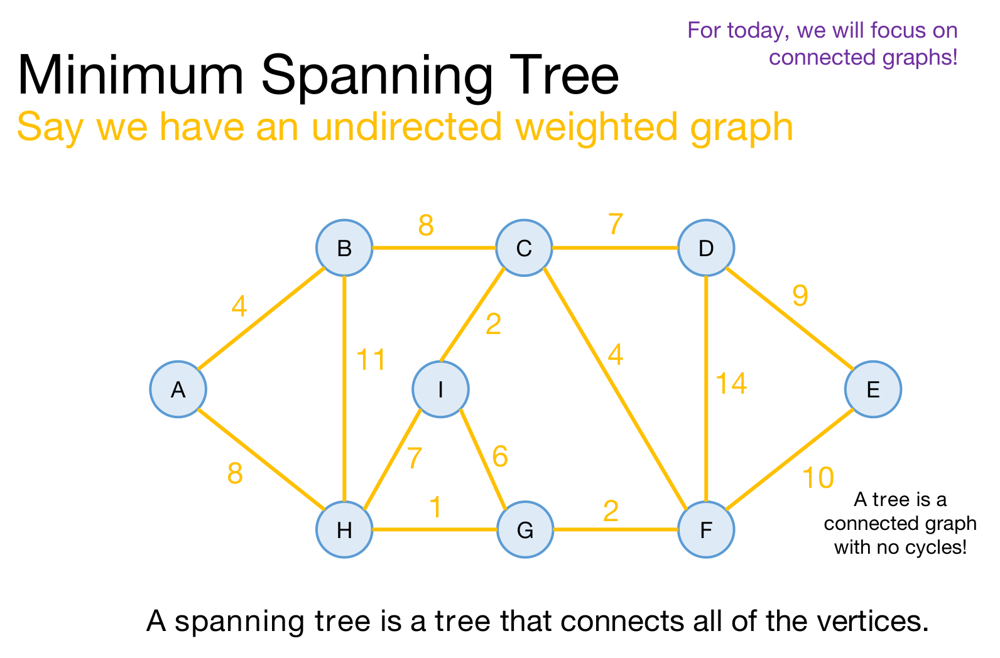
출발점은 무방향 가중 그래프(undirected weighted graph) \(G = (V, E)\)입니다. 간선 \(\{u, v\}\)마다 가중치 \(w(u,v)\)가 붙어 있고, 방향이 없으므로 \(\{u,v\}\)와 \(\{v,u\}\)는 같은 간선입니다. 이 포스트는 슬라이드를 따라 정점 수를 \(n = |V|\), 간선 수를 \(m = |E|\)로 씁니다.
- 슬라이드 오른쪽 위의 메모대로 오늘은 연결 그래프(connected graph)만 다룹니다. 연결되어 있지 않은 그래프에는 모든 정점을 잇는 트리가 애초에 없기 때문입니다.
- 예제 그래프는 정점 9개(A–I), 간선 14개입니다. 뒤에서 크루스칼 알고리즘이 간선을 가중치 순으로 보므로, 간선을 가중치 순으로 정리해 두겠습니다.
| 가중치 | 간선 |
|---|---|
| 1 | H–G |
| 2 | C–I, G–F |
| 4 | A–B, C–F |
| 6 | I–G |
| 7 | C–D, H–I |
| 8 | A–H, B–C |
| 9 | D–E |
| 10 | E–F |
| 11 | B–H |
| 14 | D–F |
가중치 2, 4, 7, 8에는 간선이 두 개씩 있다는 점을 기억해 두면, 뒤에서 두 알고리즘이 동률을 어떻게 처리하는지 볼 때 도움이 됩니다.
- 트리(tree): 사이클이 없는 연결 그래프입니다.
- 신장 트리(spanning tree): \(G\)의 간선 일부로 이루어져 모든 정점을 잇는 트리입니다. 정점이 \(n\)개이면 신장 트리의 간선은 언제나 \(n-1\)개입니다.
- 비용(cost): 신장 트리 \(T\)의 비용은 그 간선들의 가중치 합입니다. \[\mathrm{cost}(T) \;=\; \sum_{\{u,v\} \in T} w(u,v)\]
- 최소 신장 트리(minimum spanning tree, MST): 비용이 가장 작은 신장 트리입니다. \(G\)의 신장 트리 전체의 집합을 \(\mathcal{T}(G)\)라 하면 \(T^\ast \in \arg\min_{T \in \mathcal{T}(G)} \mathrm{cost}(T)\)입니다.
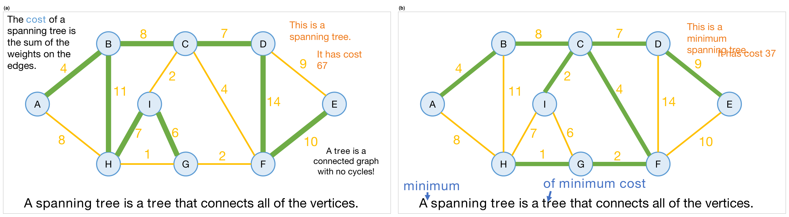
슬라이드는 같은 그래프에서 신장 트리를 두 개 보여 줍니다.
- (a) 비용 67인 신장 트리: \(4 + 8 + 7 + 11 + 7 + 6 + 14 + 10 = 67\). 모든 정점을 잇고 사이클이 없으니 신장 트리이지만, B–H(11)나 D–F(14) 같은 무거운 간선을 씁니다.
- (b) 비용 37인 신장 트리: \(4 + 8 + 7 + 2 + 4 + 9 + 1 + 2 = 37\). 슬라이드는 이것이 최소 신장 트리라고 말합니다.
슬라이드는 이 장면에서 정의 문장에 단어 두 개를 끼워 넣습니다 — “A minimum spanning tree is a tree of minimum cost that connects all of the vertices.” 곧 MST는 모든 정점을 잇는 트리 가운데 비용이 최소인 것입니다.
(b)가 정말 최소인지는 슬라이드가 증명하지 않지만, 이 그래프의 간선 14개 가운데 8개를 고르는 모든 경우를 확인해 보면 신장 트리는 662개이고 그중 최소 비용은 37입니다. 그리고 비용 37인 신장 트리는 (b)와, (b)에서 B–C(8)를 같은 가중치의 A–H(8)로 바꾼 것의 두 개입니다. MST는 하나뿐이 아닐 수 있습니다. 이 사실은 4.3절의 주의 사항과 프림·크루스칼의 동률 처리에서 다시 나옵니다.
3.2 왜 MST인가 (Why MSTs?)
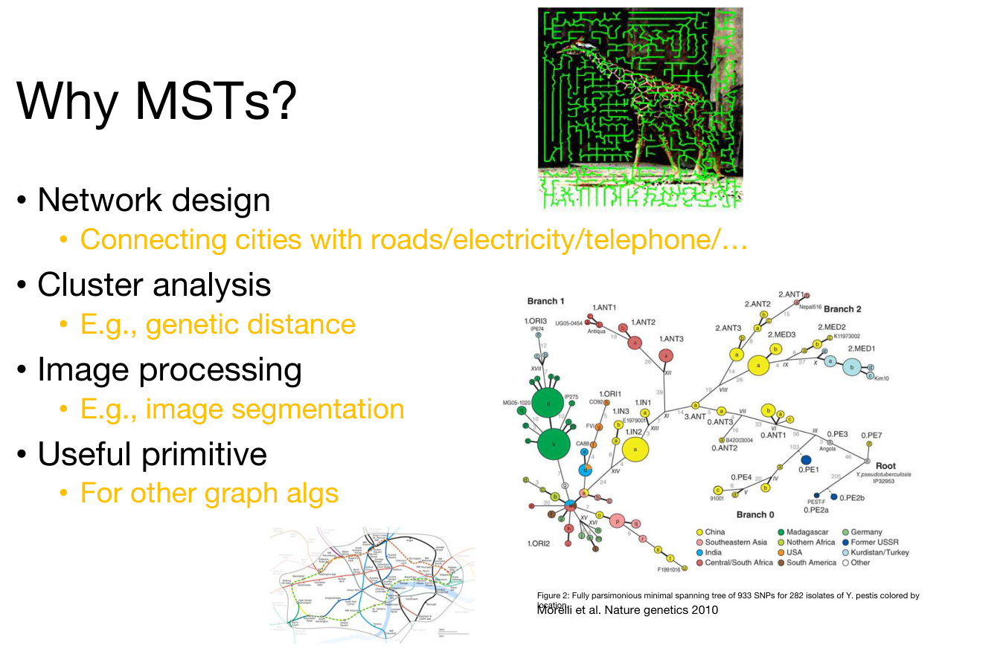
MST가 쓰이는 곳은 다양합니다.
- 네트워크 설계(network design) — 도시들을 도로·전기·전화 등으로 연결할 때.
- 군집 분석(cluster analysis) — 예를 들어 유전적 거리(genetic distance)로 개체들을 묶을 때. 슬라이드의 페스트균 계통 그림이 이 예입니다.
- 영상 처리(image processing) — 예를 들어 영상 분할(image segmentation).
- 유용한 기본 연산(useful primitive) — 다른 그래프 알고리즘의 부품으로 쓰입니다.
네트워크 설계의 예가 왜 “트리”로 귀결되는지 짚어 보겠습니다. 모든 도시를 최소 비용으로 잇는 연결망에 사이클이 있다면, 그 사이클의 간선 하나를 빼도 도시들은 여전히 연결되어 있고 비용은 그 간선의 가중치만큼 줄어듭니다(가중치가 양수라면). 따라서 비용이 최소인 연결망은 사이클이 없는 연결 그래프, 곧 신장 트리여야 하고, 그 가운데 비용이 최소인 것이 MST입니다.
3.3 MST를 어떻게 찾을까 (How to Find an MST?)
- 오늘은 탐욕 알고리즘 두 개를 봅니다.
- 이 탐욕 알고리즘들이 동작함을 증명하려고, 다음과 같은 명제를 보이겠습니다.
지금까지의 선택이 어떤 MST와 일관된다고 합시다. 그러면 우리가 내리는 다음 탐욕 선택도 여전히 어떤 MST와 일관됩니다.
여기서 “MST와 일관된다(consistent with an MST)”는, 지금까지 고른 간선 집합을 \(S\)라 할 때 \(S \subseteq T\)인 MST \(T\)가 존재한다는 뜻입니다. 지금까지의 선택을 그대로 둔 채 나머지를 잘 채우면 여전히 MST를 완성할 수 있다는 것, 곧 지난 시간의 “성공 가능성을 없애지 않는다”를 MST 문제의 말로 옮긴 것입니다.
- 슬라이드는 이것이 이 알고리즘들이 동작함을 증명하는 유일한 방법은 아니라고 덧붙입니다.
3.4 탐욕 알고리즘을 떠올려 봅시다 (Let’s Brainstorm Some Greedy Algorithms!)
슬라이드 11은 3.1절 첫 그림의 그래프를 다시 띄워 놓고 어떤 탐욕 규칙이 가능할지 생각해 보라고 합니다. 이 강의가 내놓는 답은 두 가지입니다.
- 한 정점에서 트리를 키우며, 트리에 붙일 수 있는 가장 가벼운 간선을 더한다 — 5장의 프림 알고리즘입니다.
- 이어져 있든 아니든 가장 싼 간선부터 고르되, 사이클은 피한다 — 6장의 크루스칼 알고리즘입니다.
두 규칙이 정말 MST를 만드는지 증명하려면 공통의 도구가 필요하고, 강의는 여기서 잠시 옆길로 새어 그 도구를 마련합니다.
4. 잠깐 옆길로: 그래프의 컷 (Brief Aside: Cuts in Graphs)
슬라이드는 “그래프의 컷을 논의하기 위한 짧은 여담(brief aside for a discussion of cuts in graphs)”이라는 간지(슬라이드 12)로 이 부분을 시작합니다. 아젠다의 두 번째 항목인 “그래프 이론 도구를 소개하기 위한 짧은 휴식”이 바로 이것입니다.
4.1 그래프의 컷 (Cuts in Graphs)
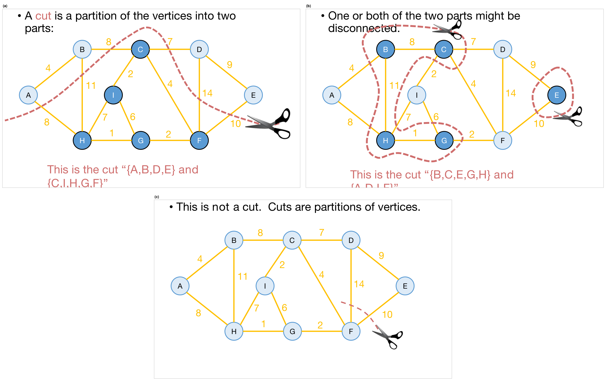
- 컷(cut)은 정점들을 두 부분으로 나눈 분할(partition)입니다. 정점 집합 \(V\)를 서로소인 두 집합 \(V_1\), \(V_2\)로 나누는 것이고(\(V_1 \cup V_2 = V\), \(V_1 \cap V_2 = \emptyset\)), 슬라이드는 이것을 “{A,B,D,E}와 {C,I,H,G,F}”처럼 두 부분을 나란히 적어 나타냅니다.
- 한 끝점은 \(V_1\)에, 다른 끝점은 \(V_2\)에 있는 간선을 그 컷을 가로지르는(cross) 간선이라 합니다. 그림 (a)의 컷 {A,B,D,E}와 {C,I,H,G,F}를 가로지르는 간선은 A–H(8), B–C(8), B–H(11), C–D(7), D–F(14), E–F(10)의 여섯 개입니다.
- 두 부분 가운데 하나 또는 둘 다 연결되어 있지 않아도 됩니다. 그림 (b)의 컷 {B,C,E,G,H}와 {A,D,I,F}에서 앞쪽은 {B,C,G,H}와 {E}로, 뒤쪽은 {A}, {D,F}, {I}로 갈라져 있습니다. 사실 (a)에서도 {A,B,D,E}는 {A,B}와 {D,E}로 나뉘어 있습니다.
- 컷은 간선이 아니라 정점의 분할입니다. 그림 (c)처럼 간선 몇 개(D–F와 E–F)만 자르다 만 곡선은, 어느 정점이 어느 쪽에 속하는지를 정하지 않으므로 컷이 아닙니다.
4.2 간선 집합을 존중하는 컷과 가벼운 간선 (Let S Be a Set of Edges in G)
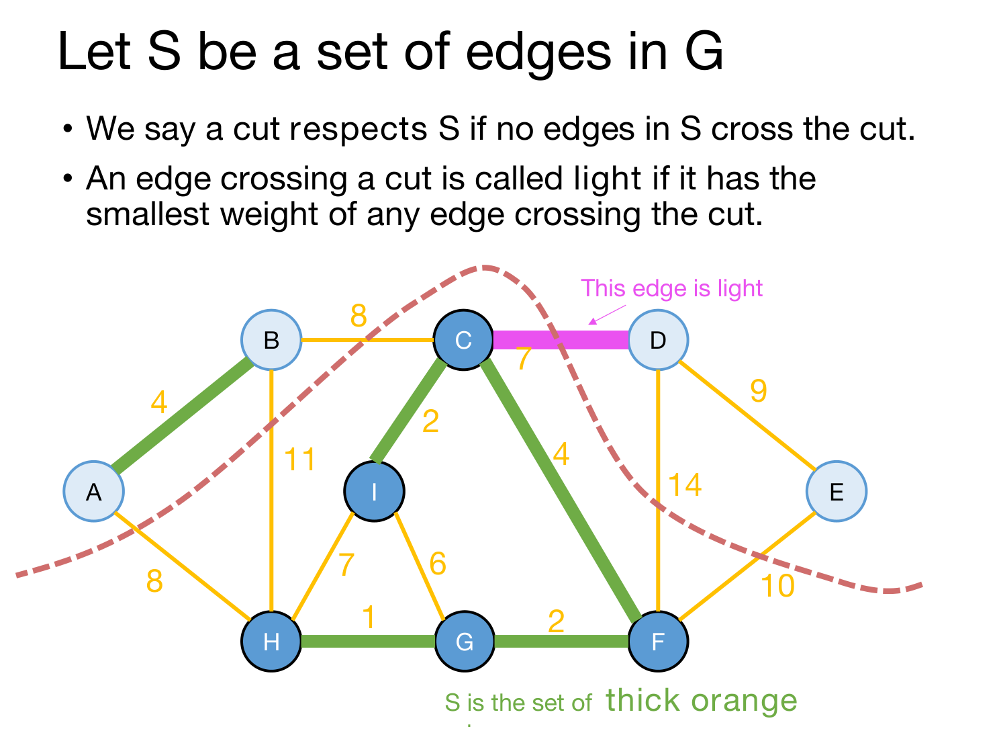
이제 컷과 간선 집합 \(S\)를 함께 생각합니다. 뒤에서 \(S\)는 “알고리즘이 지금까지 고른 간선들”이 됩니다.
\(G = (V, E)\)의 간선 집합 \(S \subseteq E\)와 컷 \((V_1, V_2)\)가 주어졌다고 합시다.
- \(S\)의 어떤 간선도 컷을 가로지르지 않으면, 그 컷이 \(S\)를 존중한다(respects)고 합니다. 곧 \(S\)의 모든 간선은 두 끝점이 같은 쪽에 있습니다.
- 컷을 가로지르는 간선 \(\{u,v\}\)가 그 컷을 가로지르는 간선 가운데 가중치가 가장 작으면, \(\{u,v\}\)를 그 컷의 가벼운 간선(light edge)이라 합니다. \[w(u,v) \;=\; \min\bigl\{\, w(e) \;:\; e \in E,\ e \text{ crosses } (V_1, V_2) \,\bigr\}\]
슬라이드의 예로 확인해 보겠습니다.
- \(S\) = {A–B, C–I, C–F, H–G, G–F}입니다. 슬라이드 아래 글씨는 이것을 “굵은 주황 간선(thick orange edges)”이라고 부르지만, 그림에서는 굵은 초록 선으로 그려져 있습니다.
- 컷 {A,B,D,E}와 {C,I,H,G,F}는 \(S\)를 존중합니다. A–B는 앞쪽 안에, C–I, C–F, H–G, G–F는 뒤쪽 안에 있기 때문입니다.
- 이 컷을 가로지르는 여섯 간선 가운데 가중치가 가장 작은 것은 C–D(7)이므로, C–D가 이 컷의 가벼운 간선입니다.
가장 작은 가중치를 갖는 간선이 여럿이면 모두 가벼운 간선입니다. 정의가 “가장 작은 가중치를 갖는다”이지 “유일하게 가장 작다”가 아니기 때문이며, 이 점은 바로 다음 절의 주의 사항으로 이어집니다.
4.3 보조정리 (Lemma)
이 강의 전체를 떠받치는 명제입니다.
- \(S\)를 간선 집합이라 하고, \(S\)를 존중하는 컷을 하나 생각합시다.
- \(S\)를 포함하는 MST가 있다고 가정합시다.
- \(\{u,v\}\)가 그 컷의 가벼운 간선이라 합시다.
- 그러면 \(S \cup \{\{u,v\}\}\)를 포함하는 MST가 있습니다.
슬라이드 19는 이 보조정리를 탐욕 알고리즘의 말로 다시 적습니다(Aka).
지금까지 성공 가능성을 없애지 않았다면, 가벼운 간선을 하나 더해도 여전히 성공 가능성을 없애지 않습니다.
분홍 글씨대로 가벼운 간선은 더해도 “안전합니다(safe)”. 4.2절 그림의 예에 대입하면, \(S\) = {A–B, C–I, C–F, H–G, G–F}를 포함하는 MST(3.1절 두 번째 그림의 (b))가 있으므로, \(S\)에 가벼운 간선 C–D(7)까지 더한 집합을 포함하는 MST도 있습니다. 실제로 그 MST가 C–D를 이미 포함하고 있습니다.
3.3절의 명제와 견주어 보면 이 보조정리의 쓰임새가 분명해집니다. “지금까지의 선택 \(S\)가 어떤 MST와 일관된다”가 가정이고, “다음 선택 \(\{u,v\}\)를 더해도 어떤 MST와 일관된다”가 결론입니다. 남은 일은 각 알고리즘이 고르는 다음 간선이 \(S\)를 존중하는 어떤 컷의 가벼운 간선임을 보이는 것뿐이며, 5장과 6장이 그 일을 합니다.
보조정리는 \(S \cup \{\{u,v\}\}\)를 포함하는 MST가 존재한다고 말할 뿐, 모든 MST가 \(\{u,v\}\)를 포함한다고 말하지 않습니다. 가벼운 간선이 여럿이면 차이가 분명해집니다. 예제 그래프에서 \(S\) = {A–B}이고 컷이 {A,B}와 나머지라면, 가로지르는 간선 A–H(8), B–C(8), B–H(11) 가운데 A–H와 B–C가 둘 다 가볍습니다. 3.1절에서 본 대로 MST는 B–C를 쓰는 것과 A–H를 쓰는 것 두 개뿐이므로, 보조정리대로 각각은 어떤 MST에 들어가지만 둘을 함께 포함하는 MST는 없습니다. 그래서 탐욕 알고리즘은 가벼운 간선을 한 번에 하나씩 더하고, 더할 때마다 컷을 새로 잡습니다.
4.4 보조정리의 증명 (Proof of Lemma)
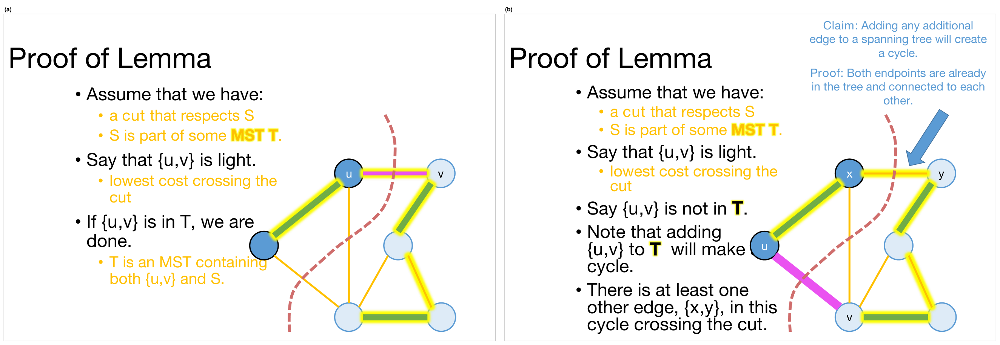
증명은 작은 그래프 하나로 진행됩니다. 먼저 가정을 정리합니다.
- \(S\)를 존중하는 컷이 있습니다.
- \(S\)는 어떤 MST \(T\)의 일부입니다: \(S \subseteq T\). 그림에서 노란 빛으로 둘러싼 간선들이 \(T\)입니다.
- \(\{u,v\}\)는 가볍습니다. 곧 컷을 가로지르는 간선 가운데 비용이 가장 낮습니다.
경우 1: \(\{u,v\}\)가 \(T\)에 들어 있을 때
그러면 할 일이 없습니다. \(T\) 자체가 \(\{u,v\}\)와 \(S\)를 모두 포함하는 MST입니다(그림 (a)).
경우 2: \(\{u,v\}\)가 \(T\)에 들어 있지 않을 때
그림 (b)의 상황이며, 네 단계로 진행합니다.
① \(T\)에 \(\{u,v\}\)를 더하면 사이클이 생깁니다. 슬라이드의 파란 글씨가 이 사실을 따로 주장하고 증명합니다.
- 주장: 신장 트리에 간선을 하나 더 더하면 반드시 사이클이 생깁니다.
- 증명: 두 끝점 \(u\), \(v\)는 이미 트리 안에 있고, 트리는 연결되어 있으므로 \(T\) 안에 \(u\)에서 \(v\)로 가는 경로가 있습니다. 그 경로에 \(\{u,v\}\)를 붙이면 사이클이 됩니다.
② 이 사이클에는 컷을 가로지르는 다른 간선 \(\{x,y\}\)가 적어도 하나 있습니다. 사이클을 \(u\)에서 출발해 한 바퀴 돈다고 생각해 봅시다. \(\{u,v\}\)를 지나며 컷의 한쪽(\(u\) 쪽)에서 다른 쪽(\(v\) 쪽)으로 건넜으니, 출발점 \(u\)로 돌아오려면 어딘가에서 다시 컷을 건너야 합니다. 그 간선은 사이클의 나머지 부분, 곧 \(T\) 안의 \(u\)–\(v\) 경로에 있으므로 \(T\)의 간선입니다. 이것을 \(\{x,y\}\)라 부릅니다.
③ 교환합니다. \(T\)에서 \(\{x,y\}\)를 빼고 \(\{u,v\}\)를 넣은 트리를 \(T'\)이라 합니다.
\[T' \;=\; \bigl(T \setminus \{\{x,y\}\}\bigr) \cup \{\{u,v\}\}\]
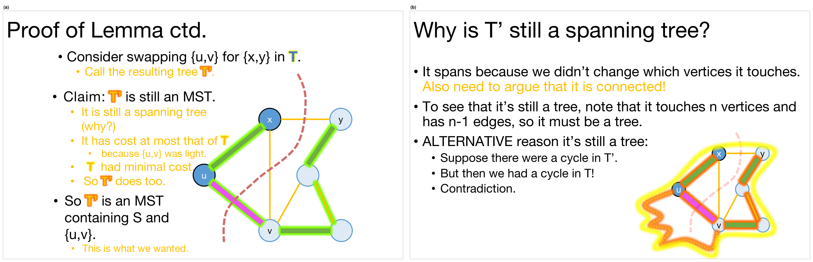
④ \(T'\)은 여전히 MST입니다. 슬라이드는 근거를 세 개 듭니다.
- 여전히 신장 트리입니다(왜?). 이 “왜?”는 다음 4.5절에서 따로 답합니다.
- 비용이 \(T\) 이하입니다. \(\{u,v\}\)가 가벼웠기 때문입니다. \(\{u,v\}\)와 \(\{x,y\}\)는 둘 다 컷을 가로지르고 \(\{u,v\}\)가 그런 간선 가운데 가장 가벼우므로 \(w(u,v) \le w(x,y)\)이고, 따라서 다음이 성립합니다. \[\mathrm{cost}(T') \;=\; \mathrm{cost}(T) - w(x,y) + w(u,v) \;\le\; \mathrm{cost}(T)\]
- \(T\)의 비용이 최소였으므로 \(T'\)도 그렇습니다. \(T\)가 MST이니 어떤 신장 트리도 \(T\)보다 싸지 않아 \(\mathrm{cost}(T) \le \mathrm{cost}(T')\)이고, 위의 부등식과 합치면 \(\mathrm{cost}(T') = \mathrm{cost}(T)\)입니다.
따라서 \(T'\)은 \(S\)와 \(\{u,v\}\)를 포함하는 MST이며, 이것이 원하던 결론입니다. 여기서 슬라이드가 한 줄로 넘어간 부분을 하나 짚어 둡니다. \(T'\)이 \(S\)를 여전히 포함하는 이유는, 뺀 간선 \(\{x,y\}\)가 \(S\)에 속하지 않기 때문입니다. \(\{x,y\}\)는 컷을 가로지르는데 컷은 \(S\)를 존중하므로, \(S\)의 간선 중에는 컷을 가로지르는 것이 없습니다. “컷이 \(S\)를 존중한다”는 가정이 바로 이 자리에서 쓰입니다.
4.5 T′은 왜 여전히 신장 트리일까 (Why Is T′ Still a Spanning Tree?)
슬라이드 27은 4.4절에서 미뤄 둔 “왜?”에 답합니다.
- 신장합니다(spans). 어떤 정점에 닿는지를 바꾸지 않았기 때문입니다. 다만 노란 글씨대로 연결되어 있다는 것도 따로 논증해야 합니다!
- 트리입니다. 정점 \(n\)개에 닿고 간선이 \(n-1\)개이므로 트리여야 합니다.
- 트리인 대안적 이유(ALTERNATIVE reason)
- \(T'\)에 사이클이 있다고 합시다.
- 그러면 \(T\)에 사이클이 있었다는 뜻입니다!
- 모순입니다.
슬라이드가 숙제로 남긴 연결성과, 대안적 이유의 가운데 단계를 채워 보겠습니다. 쓰이는 사실은 트리의 두 정점 사이에는 경로가 정확히 하나 있다는 것과, 그 결과로 트리에서 간선 하나를 빼면 정확히 두 조각으로 나뉜다는 것입니다.
- \(T'\)은 연결되어 있습니다. \(T\)에서 \(\{x,y\}\)를 빼면 \(T\)는 두 조각으로 나뉩니다. \(\{x,y\}\)는 \(T\) 안의 유일한 \(u\)–\(v\) 경로 위에 있었으므로(4.4절의 ②), 그 간선이 빠지면 \(u\)와 \(v\)는 서로 다른 조각에 놓입니다. 거기에 \(\{u,v\}\)를 넣으면 두 조각이 다시 하나로 이어집니다.
- 연결성이 왜 따로 필요한가. “정점 \(n\)개, 간선 \(n-1\)개”만으로는 트리라고 할 수 없습니다. 예를 들어 사이클 하나와 떨어진 정점 하나로 이루어진 그래프도 그 개수를 만족합니다. 연결되어 있고 간선이 \(n-1\)개여야 트리이므로, 슬라이드가 연결성을 따로 강조한 것입니다.
- 대안적 이유의 가운데 단계. \(T'\)에 사이클 \(C\)가 있다고 합시다. \(T' \setminus \{\{u,v\}\}\)는 \(T\)의 부분 그래프라 사이클이 없으므로 \(C\)는 반드시 \(\{u,v\}\)를 지납니다. 그러면 \(C\)에서 \(\{u,v\}\)를 뺀 나머지는 \(\{x,y\}\)를 쓰지 않는 \(u\)–\(v\) 경로이고, 이 경로는 \(T\) 안에 있습니다. 그런데 \(T\)에는 \(\{x,y\}\)를 지나는 \(u\)–\(v\) 경로도 있으므로 \(T\) 안에 서로 다른 \(u\)–\(v\) 경로가 두 개가 되고, 이는 \(T\)에 사이클이 있다는 뜻입니다. 4.4절 두 번째 그림 (b)의 구불구불한 주황 점선이 이 “다른 경로”를 나타냅니다.
이로써 보조정리의 증명이 끝납니다. 슬라이드는 보조정리 슬라이드에 초록 체크 표시를 달아 증명이 끝났음을 알리고(슬라이드 28), “End aside — Back to MSTs!” 간지(슬라이드 29)로 옆길을 마칩니다.
5. 프림 알고리즘 (Prim’s Algorithm)
5.1 다시 MST로 (Back to MSTs)
- MST를 어떻게 찾을까요? 오늘은 탐욕 알고리즘 두 개를 봅니다.
- 전략
- 선택을 연달아 하며 트리에 간선을 더합니다.
- 더하는 간선마다 더해도 안전함을 보입니다.
- 성공 가능성을 없애지 않습니다.
- 컷을 가로지르는 가벼운 간선을 고르고 보조정리를 씁니다.
- MST가 될 때까지 계속합니다.
신장 트리의 간선은 \(n-1\)개이므로, 안전한 간선을 \(n-1\)번 더하면 끝납니다. 이 전략은 프림과 크루스칼에 공통이고, 정확성 증명에서 두 알고리즘이 갈리는 지점은 매번 어떤 컷을 잡느냐입니다.
5.2 아이디어 1: 트리를 키운다 (Idea 1)
첫 번째 아이디어는 슬라이드의 말 그대로 “트리 하나를 키우기 시작해서, 트리를 키울 수 있는 가장 짧은 간선을 탐욕적으로 더한다”입니다.
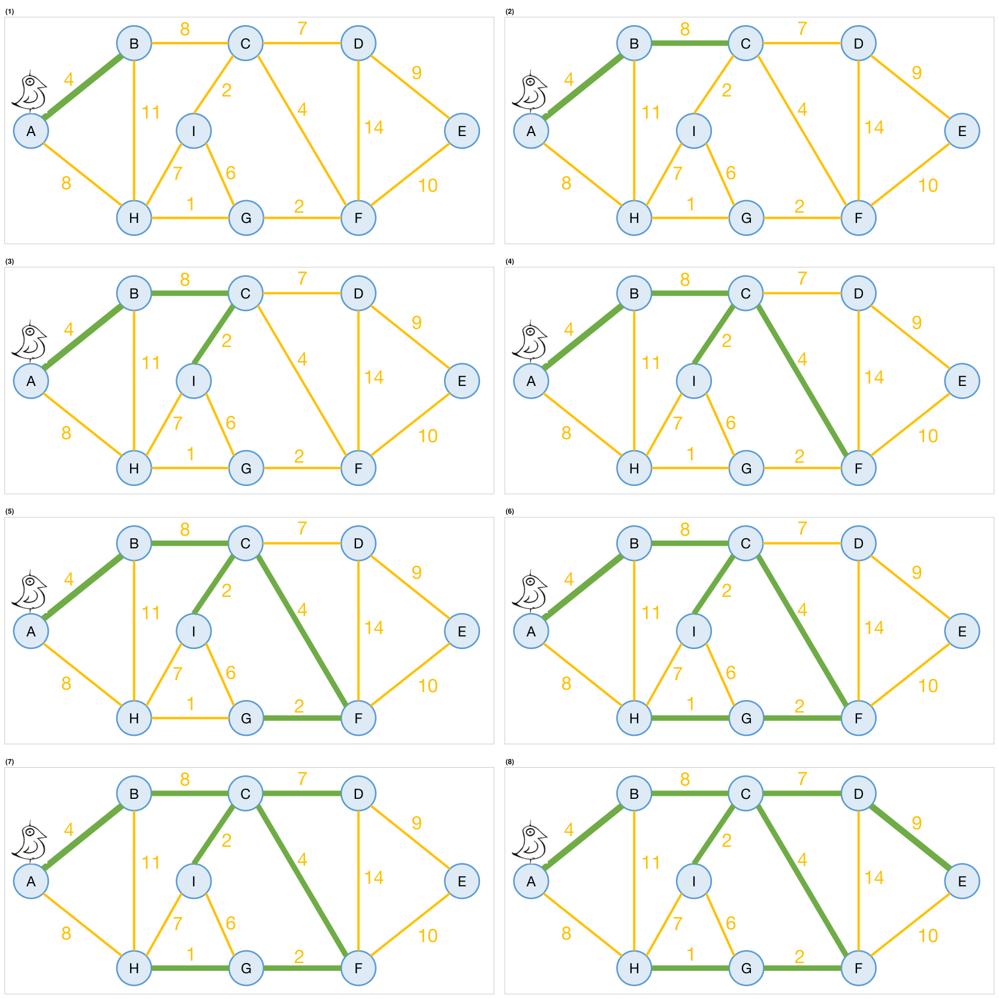
시작 정점 A(그림의 새)에서 출발해 한 단계씩 따라가 보겠습니다. “후보 간선”은 한 끝점은 트리에 있고 다른 끝점은 아직 트리에 없는 간선입니다.
| 단계 | 트리의 정점 | 후보 간선 | 고른 간선 |
|---|---|---|---|
| (1) | A | A–B(4), A–H(8) | A–B(4) |
| (2) | A, B | A–H(8), B–C(8), B–H(11) | B–C(8), A–H(8)와 동률 |
| (3) | A, B, C | A–H(8), B–H(11), C–D(7), C–I(2), C–F(4) | C–I(2) |
| (4) | A, B, C, I | A–H(8), B–H(11), C–D(7), C–F(4), H–I(7), I–G(6) | C–F(4) |
| (5) | A, B, C, I, F | A–H(8), B–H(11), C–D(7), H–I(7), I–G(6), G–F(2), D–F(14), E–F(10) | G–F(2) |
| (6) | A, B, C, I, F, G | A–H(8), B–H(11), C–D(7), H–I(7), H–G(1), D–F(14), E–F(10) | H–G(1) |
| (7) | A, B, C, I, F, G, H | C–D(7), D–F(14), E–F(10) | C–D(7) |
| (8) | A, B, C, I, F, G, H, D | D–E(9), E–F(10) | D–E(9) |
- 고른 간선의 가중치 합은 \(4 + 8 + 2 + 4 + 2 + 1 + 7 + 9 = 37\)로, 3.1절 두 번째 그림 (b)의 MST와 같은 트리입니다.
- (2)에서 슬라이드가 동률인 A–H 대신 B–C를 골랐습니다. A–H를 골랐다면 3.1절에서 본 다른 MST(B–C 대신 A–H를 쓰는 것)가 나옵니다.
- 사이클이 생길 걱정이 없습니다. 매번 트리 밖의 새 정점 하나를 간선 하나로 붙이므로, 트리는 연결된 채로 정점과 간선이 하나씩 늘어납니다. (6)의 I–G(6)처럼 두 끝점이 이미 트리에 있는 간선은 애초에 후보가 아닙니다.
5.3 프림 알고리즘 (We’ve Discovered Prim’s Algorithm!)
슬라이드는 방금 발견한 알고리즘이 프림 알고리즘이라고 밝히고, 제목 옆에 세 이름과 연도 — Jarník(1930), Prim(1957), Dijkstra(1959) — 를 적어 둡니다. 의사코드는 다음과 같습니다.
slowPrim( G = (V,E), starting vertex s ):
MST = {}
verticesVisited = { s }
while |verticesVisited| < |V|: # 많아야 n-1번 반복
find the lightest edge {x,v} in E so that: # 모든 간선을 훑으므로 많아야 m의 시간
x is in verticesVisited # 한 끝점은 방문한 정점
v is not in verticesVisited # 다른 끝점은 아직 방문하지 않은 정점
add {x,v} to MST
add v to verticesVisited
return MST슬라이드의 붉은 메모와 초록 상자가 수행 시간을 셉니다.
while반복은 많아야 \(n-1\)번 돕니다. 한 번 돌 때마다 방문한 정점이 하나씩 늘기 때문입니다.- 한 번 돌 때 가장 가벼운 간선을 찾으려고 모든 간선을 훑으면 많아야 \(m\)의 시간이 듭니다.
- 따라서 단순하게 구현하면 수행 시간은 \(O(nm)\)입니다.
\[(n-1) \cdot O(m) \;=\; O(nm)\]
이름이 slowPrim인 이유가 여기에 있습니다. 5.6–5.7절에서 이것을 빠르게 만듭니다.
5.4 두 가지 질문 (Two Questions)
알고리즘을 얻었으니 두 가지를 물어야 합니다.
- 제대로 동작할까요? 곧 정말 MST를 돌려줄까요?
- 실제로 어떻게 구현할까요? 위의 의사코드 이름이 “slowPrim”이니까요…
강의는 첫 질문(5.5절)부터 답하고, 같은 슬라이드를 다시 띄워 “Yes!”를 채운 뒤(슬라이드 49) 두 번째 질문(5.6–5.8절)으로 넘어갑니다.
5.5 제대로 동작할까 (Does It Work?)
- 탐욕적인 선택이 성공 가능성을 없애지 않음을 보여야 합니다.
- 곧 매 단계마다 다음을 보여야 합니다.
- 지금까지 더한 간선들 \(S\)를 모두 포함하는 MST가 존재한다면…
- …다음 선택 \(\{u,v\}\)를 할 때에도, \(S\)와 \(\{u,v\}\)를 포함하는 MST가 여전히 존재한다.
- 이제 보조정리를 쓸 차례입니다!
프림 알고리즘의 중간 시점 (Partway Through Prim)
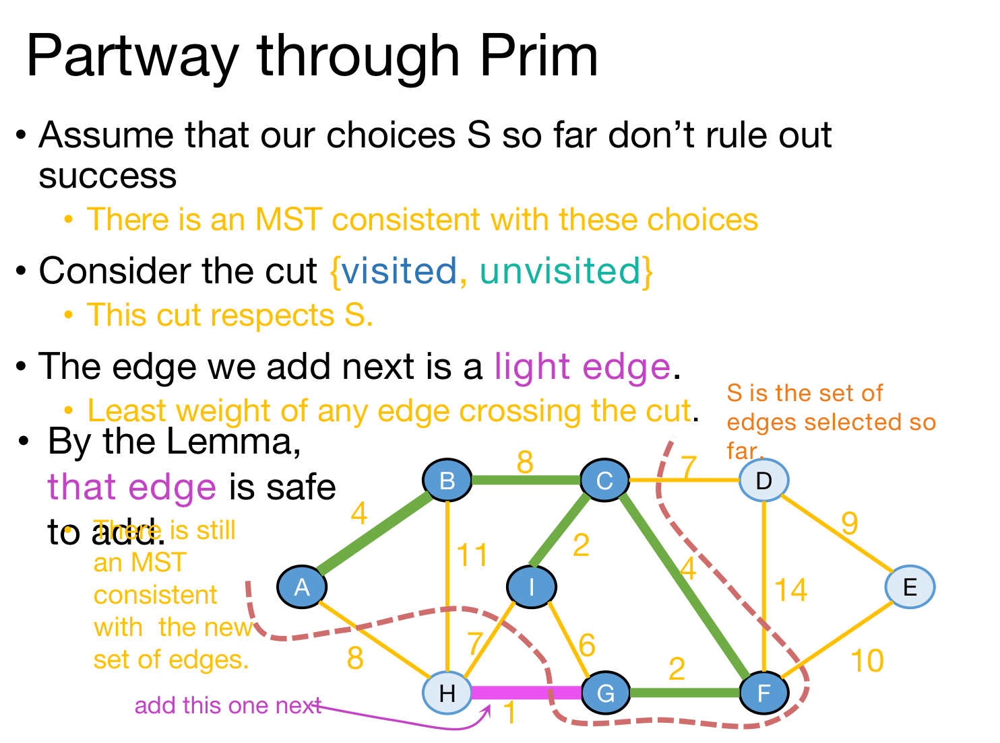
슬라이드는 5.2절의 실행을 (5)까지 진행한 시점, 곧 A, B, C, I, F, G를 방문하고 \(S\) = {A–B, B–C, C–I, C–F, G–F}를 고른 시점에서 보조정리를 적용해 보입니다.
- 지금까지의 선택 \(S\)가 성공 가능성을 없애지 않았다고 가정합니다. 곧 \(S\)와 일관된 MST가 있습니다.
- 컷 {방문한 정점(visited), 방문하지 않은 정점(unvisited)}을 생각합니다.
- 이 컷은 \(S\)를 존중합니다. \(S\)의 간선은 모두 방문한 정점 \(x\)와, 그 간선을 더하면서 방문한 정점 \(v\)를 이은 것이므로 두 끝점이 모두 방문한 쪽에 있습니다.
- 다음에 더하는 간선은 가벼운 간선입니다.
- slowPrim이 고르는 간선은 “방문한 정점과 방문하지 않은 정점을 잇는 가장 가벼운 간선”이고, 이것이 바로 이 컷을 가로지르는 간선 가운데 가중치가 가장 작은 간선의 정의입니다. 예에서는 가로지르는 일곱 간선 가운데 H–G(1)입니다.
- 보조정리에 따라 그 간선은 더해도 안전합니다. 새 간선 집합과 일관된 MST가 여전히 있습니다.
귀납법으로 마무리 (Hooray! / Formally(ish))
만세(Hooray)! 탐욕적인 선택은 성공 가능성을 없애지 않습니다. 슬라이드는 이것만으로도 귀납법(induction)을 곁들이면 프림 알고리즘의 정확성이 보장된다고 말하고, 그 귀납법을 “형식적으로(에 가깝게)” 적어 둡니다.
- 귀납 가정: \(t\)번째 간선을 더한 뒤, 지금까지 더한 간선들을 포함하는 MST가 존재합니다.
- 기저 사례: 처음에 간선을 하나도 더하지 않았을 때, 지금까지 더한 (0개의) 간선을 모두 포함하는 MST가 존재합니다. 슬라이드의 말대로 YEP — 연결 그래프에는 신장 트리가 있고 그 개수는 유한하므로 비용이 최소인 것이 반드시 있습니다.
- 귀납 단계: 귀납 가정이 \(t\)에서 성립하면(지금까지의 선택이 안전하면) \(t+1\)에서도 성립합니다(다음에 더하는 간선도 안전합니다). 방금 보조정리로 보인 것이 바로 이것입니다.
- 결론: \(n-1\)번째 간선을 더한 뒤, 지금까지 더한 간선들을 포함하는 MST가 존재합니다. 이 시점에 우리는 이미 신장 트리를 가지고 있으므로, 그것은 최소 신장 트리여야 합니다.
결론의 마지막 문장을 풀면 이렇습니다. \(n-1\)번째 간선을 더한 시점의 간선 집합 \(S\)는 정점 \(n\)개를 모두 잇는 신장 트리이고 간선이 \(n-1\)개입니다. 이것을 포함하는 MST \(T\)도 간선이 \(n-1\)개이므로 \(S \subseteq T\)이면서 \(|S| = |T|\), 곧 \(S = T\)입니다. 우리가 만든 트리가 그 MST 자체입니다.
5.6 실제로 어떻게 구현할까 (How Do We Actually Implement This?)
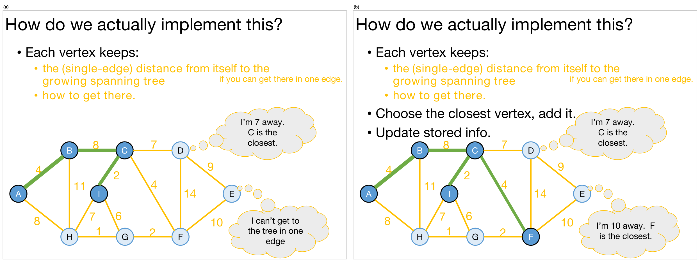
slowPrim이 느린 이유는 매번 모든 간선을 처음부터 다시 훑기 때문입니다. 그런데 한 단계에서 다음 단계로 넘어갈 때 바뀌는 것은 새로 들어온 정점 하나뿐입니다. 그래서 정보를 정점에 저장해 두고 조금씩 고쳐 쓰자는 것이 구현의 아이디어입니다.
- 각 정점은 다음을 기억합니다.
- 자라는 신장 트리까지의 (간선 하나짜리) 거리 — 간선 하나로 갈 수 있을 때만.
- 거기에 가는 방법 — 곧 그 간선의 트리 쪽 끝점.
- 가장 가까운 정점을 골라 더합니다.
- 저장된 정보를 갱신합니다.
그림 (a)의 상태(A, B, C, I가 트리에 있음)에서 D는 C를 통해 7만큼, E는 간선 하나로는 닿지 않습니다. 이때 가장 가까운 정점은 C를 통해 4만큼 떨어진 F이므로 F를 더합니다(그림 (b)). 그러면 F와 이웃한 정점들의 정보만 바뀔 수 있고, 실제로 E가 “F를 통해 10”을 새로 얻습니다.
5.7 효율적인 구현 (Efficient Implementation)
슬라이드는 이 아이디어를 “모든 정점은 키와 부모를 가진다(every vertex has a key and a parent)”로 정리합니다.
- 키(key) \(k[x]\): \(x\)에서 자라는 트리까지의 거리입니다. 처음에는 시작 정점만 \(k[s] = 0\)이고 나머지는 모두 \(\infty\)입니다.
- 부모(parent) \(p[x]\): \(p[b] = a\)는 “\(k[b]\)가 \(a\)에서 왔다”, 곧 \(b\)를 트리에 붙일 때 쓸 간선이 \(\{a, b\}\)라는 뜻입니다.
- 정점의 상태는 세 가지입니다 — 아직 도달하지 못함(unreached), 지금 처리 중인 활성(active), 그리고 도달함(reached).
규칙은 다음과 같습니다. 슬라이드의 문장을 그대로 옮기고 주석을 달았습니다.
Until all the vertices are reached:
Activate the unreached vertex u with the smallest key. # 트리 밖에서 가장 가까운 정점
for each of u's unreached neighbors v:
k[v] = min( k[v], weight(u,v) ) # u를 통해 더 가까워지면 키를 낮춘다
if k[v] updated, p[v] = u # 그때 부모도 u로 바꾼다
Mark u as reached, and add (p[u],u) to MST. # 시작 정점은 부모가 없어 간선을 더하지 않는다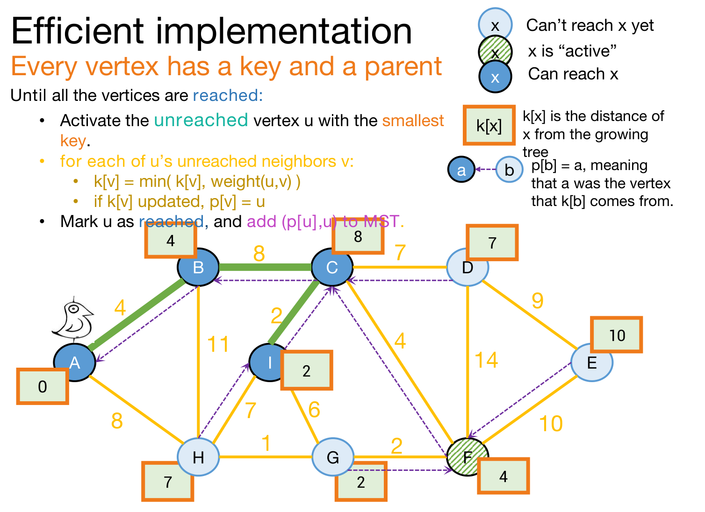
그림 캡션에서는 대괄호를 쓸 수 없어 \(k[x]\), \(p[b]\)를 k(x), p(b)처럼 소괄호로 적었습니다. 뒤의 캡션에 나오는 d(v)도 본문의 \(d[v]\)와 같은 것입니다.
슬라이드 54–69는 이 규칙을 예제 그래프에서 A부터 실행하다가, F를 도달시킨 장면 뒤에 “etc.”(슬라이드 70)로 줄입니다. 아래 표의 1–5단계는 슬라이드가 보여 준 그대로이고, 6–9단계는 같은 규칙으로 이어 계산한 것입니다.
| 단계 | 활성화 정점 u (키, 부모) | MST에 더하는 간선 | u의 도달하지 않은 이웃 v의 갱신 |
|---|---|---|---|
| 1 | A (0, 없음) | 없음 | B: ∞ → 4, H: ∞ → 8 (둘 다 부모 A) |
| 2 | B (4, A) | A–B | C: ∞ → 8 (부모 B), H: 8 그대로 (weight(B,H) = 11) |
| 3 | C (8, B) | B–C | D: ∞ → 7, F: ∞ → 4, I: ∞ → 2 (모두 부모 C) |
| 4 | I (2, C) | C–I | G: ∞ → 6 (부모 I), H: 8 → 7 (부모 A → I) |
| 5 | F (4, C) | C–F | G: 6 → 2 (부모 I → F), E: ∞ → 10 (부모 F), D: 7 그대로 (weight(F,D) = 14) |
| 6 | G (2, F) | G–F | H: 7 → 1 (부모 I → G) |
| 7 | H (1, G) | H–G | 없음 (이웃 A, B, I, G가 모두 도달함) |
| 8 | D (7, C) | C–D | E: 10 → 9 (부모 F → D) |
| 9 | E (9, D) | D–E | 없음 |
- 도달하는 순서 A, B, C, I, F, G, H, D, E와 더해지는 간선은 5.2절의 slowPrim과 정확히 같습니다. 키가 바로 “트리에 닿는 가장 가벼운 간선의 가중치”를 정점별로 기억해 둔 값이기 때문입니다.
- 3단계에서 도달하지 않은 정점의 키는 C와 H가 똑같이 8입니다. 슬라이드는 C를 활성화했고, 이는 slowPrim의 (2)에서 B–C를 고른 것과 같은 동률 처리입니다.
- 키는 줄어들기만 합니다. H의 키가 \(8 \to 7 \to 1\)로, G의 키가 \(6 \to 2\)로 줄어드는 동안 부모도 더 가까운 정점으로 바뀝니다. 마지막에 남는 부모 포인터 \(p[\cdot]\)가 MST의 간선을 알려 줍니다.
5.8 낯익어 보입니다 (This Should Look Pretty Familiar)
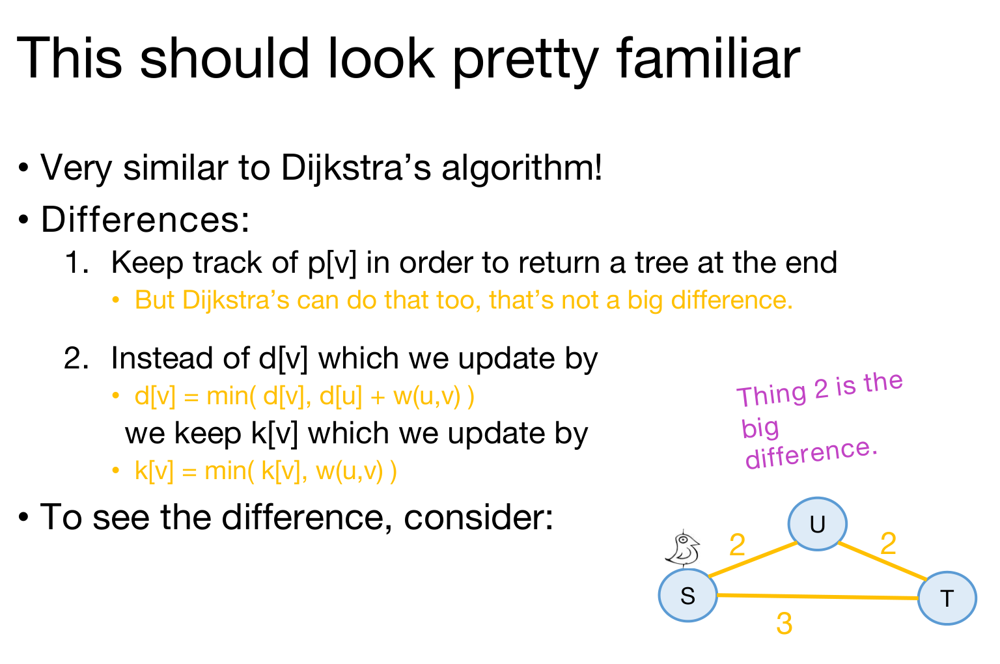
5.7절의 구현은 11강의 다익스트라 알고리즘(Dijkstra’s algorithm)과 매우 비슷합니다. 가장 작은 값을 가진 정점을 꺼내고, 그 이웃의 값을 고쳐 쓰는 골격이 똑같습니다. 슬라이드는 차이를 둘 듭니다.
- 끝에 트리를 돌려주려고 \(p[v]\)를 기록합니다. 하지만 다익스트라도 그렇게 할 수 있으니 큰 차이는 아닙니다.
- 갱신 식이 다릅니다. 이것이 큰 차이입니다. \[\underbrace{d[v] \leftarrow \min\bigl\{\, d[v],\; d[u] + w(u,v) \,\bigr\}}_{\text{Dijkstra}} \qquad\text{vs.}\qquad \underbrace{k[v] \leftarrow \min\bigl\{\, k[v],\; w(u,v) \,\bigr\}}_{\text{Prim}}\]
다익스트라의 \(d[v]\)는 시작 정점에서 \(v\)까지의 거리이고, 프림의 \(k[v]\)는 지금의 트리에서 \(v\)까지 간선 하나의 거리입니다. 프림은 트리 전체를 하나의 덩어리로 보므로 시작 정점에서 얼마나 멀리 왔는지(\(d[u]\))는 상관하지 않습니다.
슬라이드는 차이를 보려면 삼각형 하나를 생각해 보라고만 하고 결과는 적지 않으므로, 직접 따라가 보겠습니다. 정점은 S, U, T이고 간선은 S–U(2), U–T(2), S–T(3)이며 S에서 시작합니다. 여기서 S, U, T는 정점 이름일 뿐, 앞의 간선 집합 \(S\)나 MST \(T\)와는 관계가 없습니다.
- 다익스트라: S에서 \(d[\mathrm{U}] = 2\), \(d[\mathrm{T}] = 3\)을 얻고, U를 꺼낸 뒤 \(d[\mathrm{U}] + w(\mathrm{U},\mathrm{T}) = 4 > 3\)이므로 \(d[\mathrm{T}]\)는 그대로입니다. 결과는 S–U와 S–T를 쓰는 최단 경로 트리로, 가중치 합은 \(2 + 3 = 5\)입니다.
- 프림: S에서 \(k[\mathrm{U}] = 2\), \(k[\mathrm{T}] = 3\)을 얻고, U를 붙인 뒤 \(w(\mathrm{U},\mathrm{T}) = 2 < 3\)이므로 \(k[\mathrm{T}] = 2\), \(p[\mathrm{T}] = \mathrm{U}\)가 됩니다. 결과는 S–U와 U–T를 쓰는 최소 신장 트리로, 가중치 합은 \(2 + 2 = 4\)입니다.
다익스트라가 만드는 최단 경로 트리는 시작 정점에서 각 정점까지의 거리를 최소로 하고, MST는 간선 가중치의 총합을 최소로 합니다. 목적이 다르므로 결과도 다를 수 있습니다. 위의 삼각형에서 최단 경로 트리(가중치 합 5)는 T까지 거리 3을 보장하지만 총합이 MST(가중치 합 4)보다 크고, 반대로 MST를 따라가면 S에서 T까지 거리가 4로 최단 거리 3보다 깁니다.
두 가지 질문의 두 번째에 대한 답도 여기서 나옵니다(슬라이드 72). 기본적으로 다익스트라를 구현하는 것과 같은 방식으로 구현하면 됩니다. 슬라이드는 구현 예를 IPython 노트북으로 따로 제공한다고 적고 있으며, 그 노트북은 이 PDF에 포함되어 있지 않습니다.
5.9 무엇을 배웠나 (What Have We Learned?)
- 프림 알고리즘은 탐욕적으로 트리를 키웁니다. 다익스트라 알고리즘과 냄새가 아주 비슷합니다.
- 최소 신장 트리를 찾습니다!
- 레드-블랙 트리(red-black tree)로 구현하면 \(O(m\log n)\) 시간에.
- 피보나치 힙(Fibonacci heap)으로 구현하면 분할 상환(amortized) \(O(m + n\log n)\) 시간에.
- 정확성을 증명할 때는 지난 시간에 본 탐욕 알고리즘의 레시피를 그대로 따랐습니다. 매 단계마다 성공 가능성을 없애지 않음을 보였습니다.
두 수행 시간은 다익스트라 때와 같은 방식으로 셉니다. 5.7절의 규칙에서 비싼 연산은 두 가지입니다.
- 키가 가장 작은 정점 꺼내기: 정점마다 한 번씩, 모두 \(n\)번입니다.
- 키 낮추기: 간선 \(\{u,v\}\)는 두 끝점 가운데 먼저 활성화되는 쪽에서만 키 갱신을 일으킬 수 있습니다(나중 쪽이 활성화될 때는 상대가 이미 도달했으므로). 따라서 많아야 \(m\)번입니다.
레드-블랙 트리는 두 연산을 모두 \(O(\log n)\)에 하고, 연결 그래프에서는 \(m \ge n - 1\)이므로 다음과 같습니다.
\[\underbrace{n \cdot O(\log n)}_{\text{extract-min}} \;+\; \underbrace{m \cdot O(\log n)}_{\text{decrease-key}} \;=\; O\bigl((n + m)\log n\bigr) \;=\; O(m\log n)\]
피보나치 힙은 꺼내기를 분할 상환 \(O(\log n)\), 키 낮추기를 분할 상환 \(O(1)\)에 하므로 \(O(n\log n + m)\)이 됩니다.
6. 크루스칼 알고리즘 (Kruskal’s Algorithm)
6.1 탐욕 알고리즘은 하나가 아닙니다 (That’s Not the Only Greedy Algorithm)
슬라이드 74는 “MST를 위한 탐욕 알고리즘이 그것 하나만은 아닙니다!”라는 간지로 두 번째 알고리즘을 엽니다. 질문은 이렇습니다.
그냥 언제나 가장 싼 간선을 고르면 어떨까요? 지금까지 가진 것과 이어져 있든 아니든 말입니다.
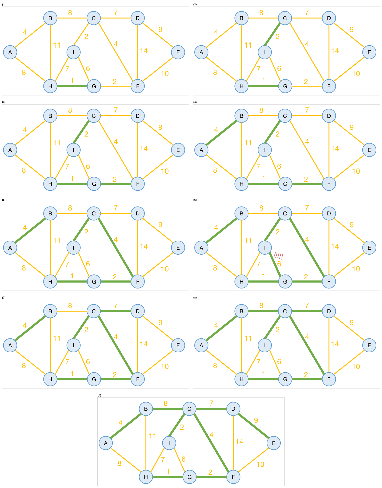
이번에는 시작 정점이 없습니다. 3.1절의 가중치 순서대로 간선을 봅니다.
- (1)–(5): H–G(1), C–I(2), G–F(2), A–B(4), C–F(4)를 차례로 더합니다. 프림과 달리 고른 간선들이 하나로 이어져 있지 않습니다. (4)의 시점에는 {A–B}, {C–I}, {H–G, G–F}가 따로 떨어져 있습니다.
- (6): 다음으로 싼 간선은 I–G(6)인데, 이것을 더하면 I–C–F–G–I가 사이클이 됩니다. 슬라이드는 느낌표(!!!!!)를 붙이고 규칙을 고칩니다 — 사이클을 만들지 않는 가장 싼 간선을 고릅니다. 사이클이 생기면 트리가 아니고, 사이클의 간선 하나는 없어도 연결이 유지되므로 쓸모없는 비용이기 때문입니다.
- (7)–(9): C–D(7), B–C(8), D–E(9)를 더하면 간선이 8개가 되어 신장 트리가 완성되고, 가중치 합은 37입니다. 프림이 만든 것과 같은 MST입니다.
슬라이드에는 나오지 않지만, 고친 규칙 아래에서 H–I(7)와 A–H(8)는 사이클을 만들므로 건너뜁니다. 같은 가중치 8인 A–H와 B–C 가운데 슬라이드는 B–C를 먼저 처리했는데, A–H를 먼저 처리했다면 A–H가 들어가고 B–C가 건너뛰어져 3.1절의 다른 MST가 나옵니다.
6.2 크루스칼 알고리즘 (We’ve Discovered Kruskal’s Algorithm!)
방금 발견한 알고리즘이 크루스칼 알고리즘입니다.
slowKruskal(G = (V,E)):
Sort the edges in E by non-decreasing weight.
MST = {}
for e in E (in sorted order): # 이 반복은 m번 돈다
if adding e to MST won't cause a cycle: # 이것을 어떻게 확인할까?
add e to MST.
return MST슬라이드의 메모는 수행 시간을 “???”로 남겨 둡니다.
for반복은 \(m\)번 돕니다.- 매번 \(e\)를 더하면 사이클이 생기는지 확인해야 하는데, 그것을 어떻게 할지가 문제입니다. 슬라이드의 보라 글씨는 이 알고리즘에서 \(e\)를 더하면 사이클이 생기는지 어떻게 알아낼지 생각해 보라고 묻습니다.
간선 \(e = \{u,v\}\)를 더해 사이클이 생기는 것은, 지금까지 고른 간선들만으로 \(u\)와 \(v\)가 이미 이어져 있을 때입니다. 단순하게는 지금까지 고른 간선들 위에서 \(u\)부터 BFS나 DFS를 돌려 \(v\)에 닿는지 보면 되고, 고른 간선은 \(n-1\)개를 넘지 않으므로 한 번에 \(O(n)\), 전체로는 정렬 외에 \(O(mn)\)이 듭니다. 이것을 빠르게 하는 것이 6.4–6.8절의 내용입니다.
6.3 두 가지 질문 (Two Questions)
프림 때와 같은 두 질문이 다시 나옵니다.
- 제대로 동작할까요? 곧 정말 MST를 돌려줄까요?
- 실제로 어떻게 구현할까요? 의사코드 이름이 “slowKruskal”이니까요…
이번에는 초록 화살표대로 두 번째 질문부터 답합니다(“Let’s do this one first”). 구현을 이해하면서 얻는 “트리 합치기” 관점이 정확성 증명에 그대로 쓰이기 때문입니다.
6.4 크루스칼은 숲을 유지합니다 (At Each Step of Kruskal’s, We Are Maintaining a Forest)
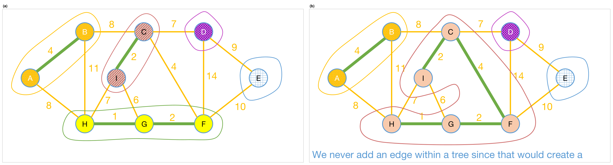
- 크루스칼의 매 단계에서 우리는 숲(forest)을 유지합니다. 숲은 서로소인 트리들의 모음입니다. 처음에는 정점 하나짜리 트리 \(n\)개로 시작한다고 볼 수 있습니다.
- 간선을 하나 더할 때마다 트리 두 개를 합칩니다. 그림 (a)의 다섯 트리 가운데 {C, I}와 {H, G, F}가 C–F(4)로 합쳐져 (b)가 됩니다.
- 트리 안쪽에는 간선을 더하지 않습니다. 그렇게 하면 사이클이 생기기 때문입니다.
이 관점에서 보면 “\(e\)를 더하면 사이클이 생기는가?”라는 질문은 “\(e\)의 두 끝점이 같은 트리에 있는가?”로 바뀝니다. 트리의 개수는 \(n\)개에서 시작해 간선을 더할 때마다 하나씩 줄어들므로, 간선을 \(n-1\)개 더하면 트리가 하나 남고 그것이 신장 트리입니다.
6.5 유니온-파인드 자료구조 (Union-Find Data Structure)
트리들을 특별한 자료구조에 보관하자는 것이 다음 단계입니다. 슬라이드 93은 이 대목에서 나무 위의 집 사진에 “‘treehouse’?”라는 말장난을 달아 두었습니다. 실제 답은 유니온-파인드(union-find) 자료구조입니다.
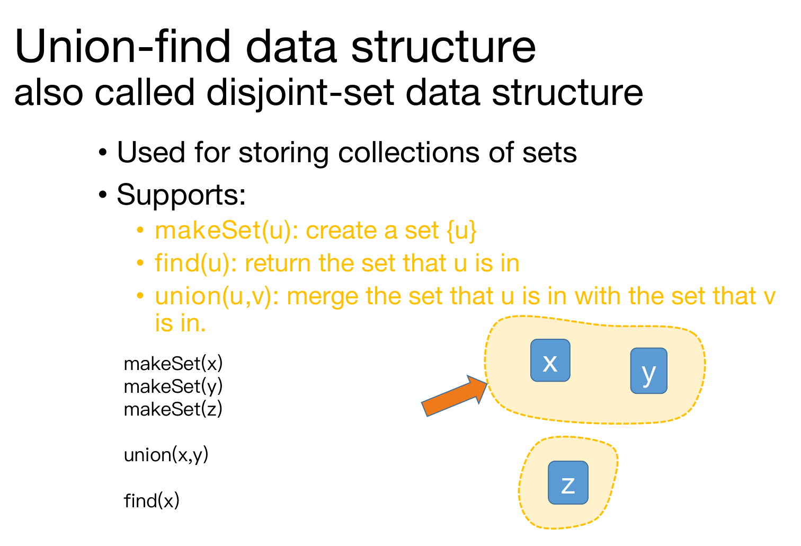
서로소 집합(disjoint-set) 자료구조라고도 부르며, 집합들의 모음을 저장하는 데 씁니다. 다음 세 연산을 지원합니다.
makeSet(u): 집합 \(\{u\}\)를 만듭니다.find(u): \(u\)가 속한 집합을 돌려줍니다.union(u,v): \(u\)가 속한 집합과 \(v\)가 속한 집합을 합칩니다.
슬라이드 94–96의 예는 다음과 같습니다.
makeSet(x),makeSet(y),makeSet(z)→ 집합이 \(\{x\}\), \(\{y\}\), \(\{z\}\) 세 개입니다.union(x,y)→ \(\{x, y\}\)와 \(\{z\}\) 두 개가 됩니다.find(x)→ \(x\)가 속한 집합 \(\{x, y\}\)를 돌려줍니다.
크루스칼에 쓸 때는 숲의 트리 하나를 집합 하나로 봅니다. 두 정점이 같은 트리에 있는지는 find(u)와 find(v)가 같은 집합을 돌려주는지로 알 수 있고, 간선을 더해 두 트리를 합치는 것은 union(u,v)입니다.
6.6 크루스칼 의사코드 (Kruskal Pseudo-code)
kruskal(G = (V,E)):
Sort E by weight in non-decreasing order
MST = {} # 빈 트리로 시작한다
for v in V:
makeSet(v) # 각 정점을 숲 속의 자기만의 트리에 넣는다
for (u,v) in E: # 정렬된 순서로 간선을 훑는다
if find(u) != find(v): # u와 v가 같은 트리에 있지 않으면
add (u,v) to MST
union(u,v) # u의 트리와 v의 트리를 합친다
return MSTslowKruskal의 “사이클이 생기는가?”가 find(u) != find(v)라는 비교 한 번으로 바뀌었습니다.
6.7 한 번 더 (Once More…)
슬라이드 98–106은 유니온-파인드의 관점으로 예제를 한 번 더 실행합니다. 처음에는 모든 정점이 자기만의 트리에 있고(노란 점선 고리 아홉 개), 그다음 합치기 시작해서, 큰 트리 하나가 되면 멈춥니다. 정렬된 간선을 하나씩 처리하는 과정을 표로 정리하면 다음과 같습니다.
| 순서 | 간선(가중치) | 두 끝점의 트리 | 동작 |
|---|---|---|---|
| 1 | H–G(1) | {H}, {G} — 다름 | 추가, union → {H, G} |
| 2 | C–I(2) | {C}, {I} — 다름 | 추가, union → {C, I} |
| 3 | G–F(2) | {H, G}, {F} — 다름 | 추가, union → {H, G, F} |
| 4 | A–B(4) | {A}, {B} — 다름 | 추가, union → {A, B} |
| 5 | C–F(4) | {C, I}, {H, G, F} — 다름 | 추가, union → {C, I, H, G, F} |
| 6 | I–G(6) | 둘 다 {C, I, H, G, F} — 같음 | 건너뜀 |
| 7 | C–D(7) | {C, I, H, G, F}, {D} — 다름 | 추가, union → {C, I, H, G, F, D} |
| 8 | H–I(7) | 둘 다 같은 트리 — 같음 | 건너뜀 |
| 9 | B–C(8) | {A, B}, {C, I, H, G, F, D} — 다름 | 추가, union → 정점 8개짜리 트리 |
| 10 | A–H(8) | 둘 다 같은 트리 — 같음 | 건너뜀 |
| 11 | D–E(9) | 정점 8개짜리 트리, {E} — 다름 | 추가, union → 정점 9개 모두 하나의 트리 |
| 12–14 | E–F(10), B–H(11), D–F(14) | 모두 같은 트리 — 같음 | 건너뜀 |
- 간선 14개 가운데 8개를 더하고 6개를 건너뜁니다. 더한 간선 수 8은 \(n - 1\)과 같고, 이것이 슬라이드 99–106의 여덟 장면(H–G, C–I, G–F, A–B, C–F, C–D, B–C, D–E)입니다.
- 같은 가중치 7인 C–D와 H–I는 어느 쪽을 먼저 보아도 결과가 같습니다. H–I는 언제 보든 두 끝점이 이미 같은 트리에 있기 때문입니다. 가중치 8인 B–C와 A–H는 순서에 따라 결과가 달라지며, 슬라이드는 B–C를 먼저 처리했습니다.
- 슬라이드의 “큰 트리 하나가 되면 멈춘다(Stop when we have one big tree!)”는, 11번째 간선 뒤로는 모든 간선이 건너뛰어질 수밖에 없으므로 남은 간선을 보지 않고 끝내도 된다는 뜻입니다.
6.8 수행 시간 (Running Time)
- 간선 정렬에 \(O(m\log n)\)이 듭니다.
- 실제로 가중치가 작은 정수라면 기수 정렬(radix sort)을 써서 \(O(m)\)에 할 수 있습니다.
- 나머지는 다음과 같습니다.
makeSet을 \(n\)번 부릅니다 — 각 정점을 자기 집합에 넣습니다.find를 \(2m\)번 부릅니다 — 간선마다 두 끝점을 찾습니다.union을 \(n-1\)번 부릅니다 — 트리에 간선을 \(n-1\)개보다 많이 더하지 않으므로,union도 \(n-1\)번보다 많이 부르지 않습니다.
- 총 수행 시간
- 최악의 경우 \(O(m\log n)\)으로, 레드-블랙 트리를 쓴 프림과 같습니다.
- 기수 정렬을 쓸 수 있다면 \(O(m)\)에 가깝습니다.
정렬이 \(O(m\log m)\)이 아니라 \(O(m\log n)\)으로 적힌 이유는, 단순 그래프에서 \(m \le n^2\)이라 \(\log m \le 2\log n\)이기 때문입니다.
\[O(m\log m) \;\subseteq\; O(m \log n^2) \;=\; O(2m\log n) \;=\; O(m\log n)\]
슬라이드의 옆 메모와 각주는 유니온-파인드 연산의 비용을 이렇게 설명합니다.
- 실제로
makeSet,find,union은 각각 거의 상수 시간에 돕니다. (find와union을 \(O(\log n)\)에 하는 더 간단한 방법도 있습니다.) - 엄밀히는 분할 상환 \(O(\alpha(n))\) 시간입니다. 여기서 \(\alpha(n)\)은 역 아커만 함수(inverse Ackermann function)로, \(n\)이 우주의 원자 수보다 작기만 하면 \(\alpha(n) \le 4\)입니다.
이를 합치면 다음과 같습니다.
\[\underbrace{O(m\log n)}_{\text{sorting}} \;+\; \underbrace{\bigl(n + 2m + (n-1)\bigr)\cdot O(\alpha(n))}_{\mathtt{makeSet},\ \mathtt{find},\ \mathtt{union}} \;=\; O(m\log n)\]
정렬을 기수 정렬로 \(O(m)\)에 하면 남는 것은 \(O\bigl((n + m)\,\alpha(n)\bigr)\)이고, 연결 그래프에서는 \(n \le m + 1\)이며 \(\alpha(n) \le 4\)이므로 실질적으로 \(O(m)\)입니다.
두 가지 질문의 두 번째에 대한 답이 나왔습니다(슬라이드 108) — 유니온-파인드 자료구조를 쓰면 최악의 경우 \(O(m\log n)\)입니다. 초록 화살표는 이제 “트리 합치기” 관점을 이해했으니 첫 번째 질문으로 가자고 말합니다.
6.9 제대로 동작할까 (Does It Work?)
- 탐욕적인 선택이 성공 가능성을 없애지 않음을 보여야 합니다.
- 곧 매 단계마다 지금까지 더한 간선을 모두 포함하는 MST가 존재해야 합니다.
- 이제 보조정리를 쓸 차례입니다 — 또다시!
크루스칼 알고리즘의 중간 시점 (Partway Through Kruskal)
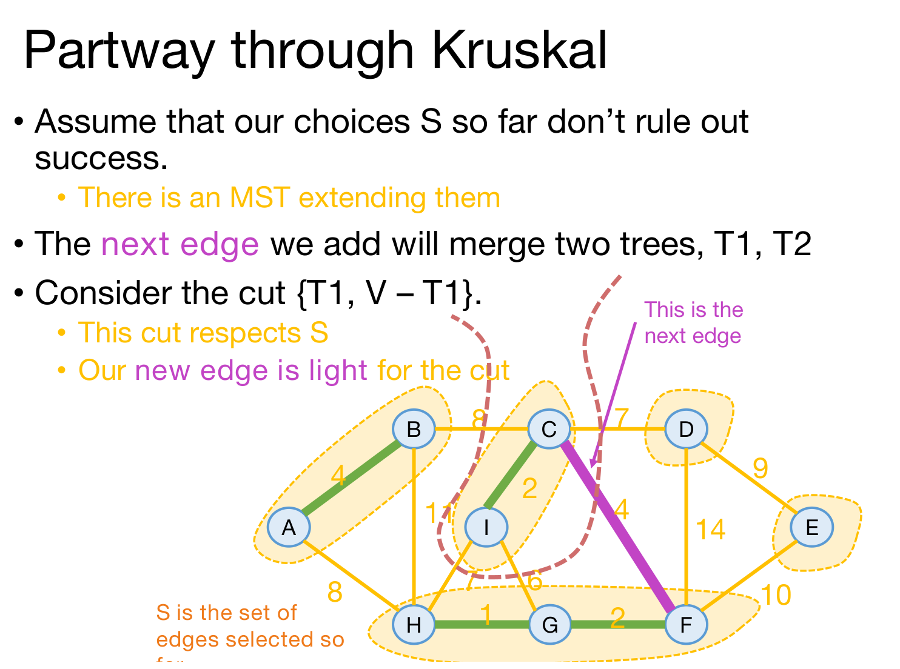
슬라이드는 6.7절의 4번째 간선까지 처리한 시점, 곧 \(S\) = {A–B, C–I, H–G, G–F}이고 다음 간선이 C–F(4)인 시점에서 보조정리를 적용합니다. 슬라이드 112는 이 질문 — 보조정리를 써서 다음 선택도 성공 가능성을 없애지 않음을 어떻게 보일까? — 에 “Think-Share Terrapins”라는 표시를 붙여, 강의 중에 먼저 생각해 보게 합니다.
- 지금까지의 선택 \(S\)가 성공 가능성을 없애지 않았다고 가정합니다. 곧 \(S\)를 확장하는 MST가 있습니다.
- 다음에 더할 간선은 두 트리 \(T_1\), \(T_2\)를 합칩니다. 예에서는 C–F가 \(T_1\) = {C, I}와 \(T_2\) = {H, G, F}를 합칩니다.
- 컷 \(\{T_1, V - T_1\}\)을 생각합니다.
- 이 컷은 \(S\)를 존중합니다. \(S\)의 간선은 모두 숲의 어느 한 트리 안에 있고, \(T_1\)은 그런 트리 하나를 통째로 담고 있으므로, \(S\)의 간선 가운데 한 끝점만 \(T_1\)에 있는 것은 없습니다.
- 새 간선은 이 컷의 가벼운 간선입니다. 예에서는 컷을 가로지르는 다섯 간선 B–C(8), C–D(7), C–F(4), I–G(6), H–I(7) 가운데 C–F(4)가 가장 가볍습니다.
- 보조정리에 따라 그 간선은 더해도 안전합니다. 새 간선 집합을 확장하는 MST가 여전히 있습니다.
프림에서는 “가장 가벼운 교차 간선을 고른다”가 규칙 그 자체였지만, 크루스칼의 규칙은 컷을 직접 언급하지 않습니다. 그래서 새 간선이 왜 그 컷의 가벼운 간선인지는 따로 논증이 필요하며, 슬라이드가 한 줄로 넘어간 이 부분을 채워 두겠습니다.
다음에 더할 간선을 \(e\)라 하고, 컷 \(\{T_1, V - T_1\}\)을 가로지르는 간선 \(e'\)이 \(e\)보다 먼저 처리되었다고 해 봅시다.
- \(e'\)은 지금 서로 다른 트리에 있는 두 정점을 잇습니다(한 끝점은 \(T_1\) 안, 다른 끝점은 밖).
- 숲의 트리는 합쳐지기만 하고 쪼개지지 않으므로, \(e'\)을 처리하던 때에도 두 끝점은 서로 다른 트리에 있었습니다.
- 그렇다면 그때 \(e'\)은 건너뛰어지지 않고 더해졌을 것이고, 지금 \(S\)에 들어 있으면서 \(T_1\)을 바깥과 잇고 있어야 합니다. 이는 \(T_1\)이 숲의 트리 하나라는 것과 모순입니다.
따라서 컷을 가로지르는 간선 가운데 \(e\)보다 먼저 처리된 것은 없습니다. 간선은 가중치가 줄어들지 않는 순서로 처리되므로, 컷을 가로지르는 모든 간선의 가중치는 \(w(e)\) 이상이고, \(e\)는 이 컷의 가벼운 간선입니다.
귀납법으로 마무리 (Hooray! / Formally(ish))
만세(Hooray)! 탐욕적인 선택은 성공 가능성을 없애지 않으며, 귀납법을 곁들이면 크루스칼 알고리즘의 정확성이 보장됩니다. 슬라이드 116의 귀납법은 5.5절의 것과 똑같고, 슬라이드도 오른쪽 위에 “프림 알고리즘 때와 정확히 같은 슬라이드”라고 적어 둡니다 — 귀납 가정, 기저 사례(간선 0개), 귀납 단계(방금 보인 것), 결론(\(n-1\)번째 간선 뒤 신장 트리이므로 MST)이 그대로입니다.
이로써 두 가지 질문의 답이 모두 채워집니다(슬라이드 117). 동작합니다. 그리고 유니온-파인드 자료구조로 구현합니다!
6.10 무엇을 배웠나 (What Have We Learned?)
- 크루스칼 알고리즘은 탐욕적으로 숲을 키웁니다.
- 최소 신장 트리를 \(O(m\log n)\) 시간에 찾습니다.
- 유니온-파인드 자료구조로 구현하면 그렇습니다.
- 간선 가중치가 적당한 크기의 정수이고 역 아커만 함수를 무시하면, 실제로는 기본적으로 \(O(m)\)입니다.
- 정확성을 증명할 때는 지난 시간에 본 탐욕 알고리즘의 레시피를 그대로 따랐습니다. 매 단계마다 성공 가능성을 없애지 않음을 보였습니다.
7. 비교와 대조 (Compare and Contrast)
슬라이드 119는 두 알고리즘을 나란히 놓습니다.
| 프림 (Prim) | 크루스칼 (Kruskal) | |
|---|---|---|
| 키우는 것 | 트리 하나 | 숲 |
| 수행 시간 | 레드-블랙 트리로 \(O(m\log n)\), 피보나치 힙으로 \(O(m + n\log n)\) | 유니온-파인드로 \(O(m\log n)\), 가중치를 기수 정렬할 수 있으면 사실상(morally) “\(O(m)\)” |
| 더 나을 수 있는 경우 | 간선 가중치를 기수 정렬할 수 없는 조밀한(dense) 그래프 | 간선 가중치를 기수 정렬할 수 있는 희소한(sparse) 그래프 |
슬라이드의 주황 메모가 말하는 “더 나을 수 있는 경우”는 수행 시간을 그래프의 밀도에 대입하면 이해됩니다.
- 조밀한 그래프(\(m\)이 \(n^2\)에 가까움)에서는 \(n\log n\)이 \(m\)보다 작으므로 피보나치 힙을 쓴 프림이 \(O(m + n\log n) = O(m)\)입니다. 가중치를 기수 정렬할 수 없다면 크루스칼은 정렬 때문에 \(O(m\log n)\)에 머뭅니다.
- 희소한 그래프(\(m\)이 \(n\)과 비슷함)에서는 프림의 \(n\log n\) 항이 남아 \(O(n\log n)\)이지만, 기수 정렬을 쓸 수 있는 크루스칼은 사실상 \(O(m) = O(n)\)입니다.
8. 프림과 크루스칼의 공통점 (Both Prim and Kruskal)
- 둘 다 MST를 위한 탐욕 알고리즘입니다.
- 추론이 비슷합니다.
- 최적 부분 구조(optimal substructure): 컷이 만들어 내는 부분 그래프들.
- 안전한 선택을 하는 방법은 컷을 가로지르는 가벼운 간선을 고르는 것입니다.
슬라이드는 이 장면에 4.2절 그림과 같은 컷과 가벼운 간선 C–D를 다시 붙여 둡니다. 두 알고리즘의 정확성이 모두 이 그림 한 장의 논리 — \(S\)를 존중하는 컷과 그 컷의 가벼운 간선 — 에 기대고 있기 때문입니다. “최적 부분 구조”를 이 맥락에서 읽으면, 지금까지 고른 간선들이 컷의 양쪽 안에 머물러 있는 한(컷이 \(S\)를 존중하는 한), 두 쪽을 잇는 결정은 그 컷의 가장 가벼운 간선 하나로 충분하다는 뜻입니다. 두 알고리즘은 어떤 컷을 잡느냐만 다릅니다 — 프림은 {방문, 미방문}, 크루스칼은 \(\{T_1, V - T_1\}\)입니다.
9. 더 잘할 수 있을까 (Can We Do Better?)
슬라이드 121은 연결된 무방향 그래프에서 MST를 구하는 최신 결과(state-of-the-art)를 소개합니다.
| 결과 | 수행 시간 | 종류 |
|---|---|---|
| Karger–Klein–Tarjan (1995) | \(O(m)\) | 무작위(randomized) 알고리즘 |
| Chazelle (2000) | \(O(m \cdot \alpha(n))\) | 결정적(deterministic) 알고리즘 |
| Pettie–Ramachandran (2002) | \(O\)(문제를 푸는 데 필요한 최적의 비교 횟수 — 그게 무엇이든…) | 결정적 알고리즘 |
- Pettie–Ramachandran의 알고리즘은 필요한 비교 횟수만큼만 시간을 쓰는, 그런 의미에서 최적인 결정적 알고리즘입니다. 다만 그 “최적의 비교 횟수”가 정확히 얼마인지는 모릅니다.
- 그래서 슬라이드는 묻습니다 — 이 수는 무엇일까요? 그 성가신 \(\alpha(n)\)이 꼭 필요할까요? 열린 문제(open questions)입니다!
어떤 알고리즘이든 간선을 모두 한 번은 보아야 하므로 이 수는 적어도 \(m\)에 비례하고, Chazelle의 알고리즘이 있으므로 많아야 \(m \cdot \alpha(n)\)에 비례합니다. 결정적 알고리즘으로 \(O(m)\)이 가능한지가 곧 “\(\alpha(n)\)이 필요한가”라는 질문입니다.
10. 되짚어보기 (Recap)
- 최소 신장 트리를 위한 알고리즘 두 개
- 프림 알고리즘
- 크루스칼 알고리즘
- 둘 다 탐욕 알고리즘의 (또 다른) 예입니다!
- 선택을 연달아 합니다.
- 각 단계에서 선택이 성공 가능성을 없애지 않음을 보입니다.
- 결국 한 번도 성공 가능성을 없앤 적이 없으므로, 성공할 수밖에 없습니다.
두 알고리즘을 보조정리의 쓰임새를 중심으로 나란히 놓으면 다음과 같습니다.
| 프림 알고리즘 | 크루스칼 알고리즘 | |
|---|---|---|
| 탐욕 규칙 | 트리에 닿는 간선 가운데 가장 가벼운 것 | 사이클을 만들지 않는 간선 가운데 가장 가벼운 것 |
| 키우는 것 | 트리 하나 | 숲(트리 여러 개를 합쳐 감) |
| 보조정리에 쓰는 컷 | {방문한 정점, 방문하지 않은 정점} | \(\{T_1, V - T_1\}\), \(T_1\)은 새 간선이 잇는 트리 하나 |
| 컷이 \(S\)를 존중하는 이유 | \(S\)의 간선은 모두 방문한 정점끼리를 잇는다 | \(S\)의 간선은 모두 숲의 어느 한 트리 안에 있다 |
| 새 간선이 가벼운 이유 | 그 컷을 가로지르는 가장 가벼운 간선을 고르는 것이 규칙 자체다 | 더 먼저 처리된 교차 간선이 있었다면 이미 더해졌어야 한다 |
| 구현 | 키·부모 배열 + 레드-블랙 트리 또는 피보나치 힙 | 간선 정렬 + 유니온-파인드 |
10.1 다음 시간 (Next Time)
- 최소 컷(minimum cuts)… 그리고 최대 흐름(max flows)!
이번 강의의 컷은 MST의 정확성을 보이는 도구였지만, 다음 강의에서는 컷 자체가 최적화의 대상이 됩니다. 슬라이드의 “Before next time” 제목 아래는 비어 있습니다.
정리하며 (Closing Remarks)
이번 강의의 논리 사슬을 단계별로 압축하면 다음과 같습니다.
| 단계 | 내용 | 근거 |
|---|---|---|
| ① 문제 | 연결된 무방향 가중 그래프에서 모든 정점을 잇는 트리 가운데 간선 가중치 합이 최소인 것(MST)을 찾는다 | 예제 그래프의 비용 67 신장 트리 vs 비용 37 MST |
| ② 증명 전략 | 지금까지의 선택이 어떤 MST와 일관되면 다음 탐욕 선택도 어떤 MST와 일관됨을 보인다 | 지난 시간의 탐욕 레시피, How to find an MST? |
| ③ 컷의 언어 | 컷은 정점의 분할이고, \(S\)의 간선이 하나도 가로지르지 않으면 컷이 \(S\)를 존중하며, 가로지르는 간선 중 최소 가중치인 것이 가벼운 간선이다 | {A,B,D,E}와 {C,I,H,G,F}로 나눈 컷의 가벼운 간선 C–D(7) |
| ④ 보조정리 | \(S\)를 존중하는 컷의 가벼운 간선 \(\{u,v\}\)를 더해도 \(S \cup \{\{u,v\}\}\)를 포함하는 MST가 있다 | MST에 \(\{u,v\}\)를 넣어 생긴 사이클에서 교차 간선 \(\{x,y\}\)를 빼는 교환 논증 |
| ⑤ 프림의 정확성 | 시작 정점에서 트리를 키우며 {방문, 미방문} 컷의 가벼운 간선을 더하므로 매 단계 안전하고, 귀납법으로 \(n-1\)개 뒤 MST를 얻는다 | 예제에서 A부터 8단계 → 비용 37 |
| ⑥ 프림의 구현 | 정점마다 키 \(k[v]\)와 부모 \(p[v]\)를 두고 \(k[v] \leftarrow \min\{k[v], w(u,v)\}\)로 갱신하는 다익스트라와 같은 골격 | 레드-블랙 트리 \(O(m\log n)\), 피보나치 힙 \(O(m + n\log n)\) |
| ⑦ 다익스트라와의 차이 | \(d[u] + w(u,v)\)가 아니라 \(w(u,v)\)만 보며, 최단 경로 트리는 MST가 아닐 수 있다 | S, U, T 삼각형: 최단 경로 트리 5 vs MST 4 |
| ⑧ 크루스칼의 규칙 | 간선을 가중치 순으로 보며 사이클을 만들지 않는 간선만 더해 숲의 트리들을 합쳐 간다 | 예제에서 8개 추가, 6개 건너뜀 → 비용 37 |
| ⑨ 크루스칼의 구현 | 유니온-파인드로 두 끝점이 같은 트리인지 판정한다: makeSet \(n\)번, find \(2m\)번, union \(n-1\)번이며 정렬이 지배해 \(O(m\log n)\) | 분할 상환 \(O(\alpha(n))\), \(\alpha(n) \le 4\) |
| ⑩ 크루스칼의 정확성 | 새 간선이 잇는 트리 \(T_1\)에 대해 컷 \(\{T_1, V - T_1\}\)은 \(S\)를 존중하고 그 간선은 가볍다 → 보조정리 | Partway through Kruskal, 앞서 처리된 교차 간선은 없다는 논증 |
| ⑪ 비교와 한계 | 조밀한 그래프는 프림, 희소하고 기수 정렬이 가능한 그래프는 크루스칼이 유리하며, 최적 결정적 알고리즘의 정확한 복잡도는 열린 문제다 | Compare and contrast, Can we do better? |